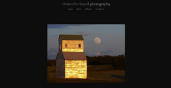
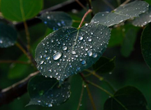
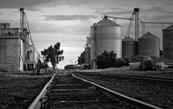
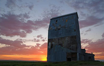

Old Building near Ashton, ID
Old Idaho Elevator
Idaho Wildflower
© Christopher Leavell 2008
© Christopher Leavell 2008
© Christopher Leavell 2008



Highway 47
Idaho View of Tetons
Aspen Leaf
© Christopher Leavell 2008
© Christopher Leavell 2008
© Christopher Leavell 2008



Idaho Hayfield
End of Railroad in Ashton, ID
Old Elevator near Ashton, ID
© Christopher Leavell 2008
© Christopher Leavell 2008
© Christopher Leavell 2008